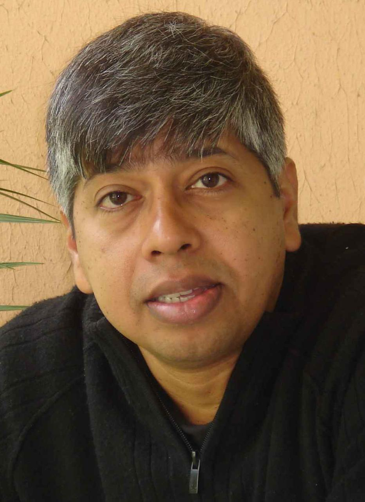

Professor
Water Resources & Environmental Engineering Group
Department of Civil Engineering
Indian Institute of Science
Bangalore – 560 012
civil.iisc.ac.in/~muddu
Water Resources & Environmental Engineering Group
Department of Civil Engineering
Indian Institute of Science
Bangalore – 560 012
civil.iisc.ac.in/~muddu
Contact Details
- Work:
- +91 (80) 22 93 22 45 & +91 80 29 62 62 59
- Home:
- +91 (80) 23 60 28 70 & +91 (80) 23 60 35 25
- Portable:
- +91 98450 96259
- Email:
-
muddu@iisc.ac.in (work)
sekhar.muddu@gmail.com (preferred)